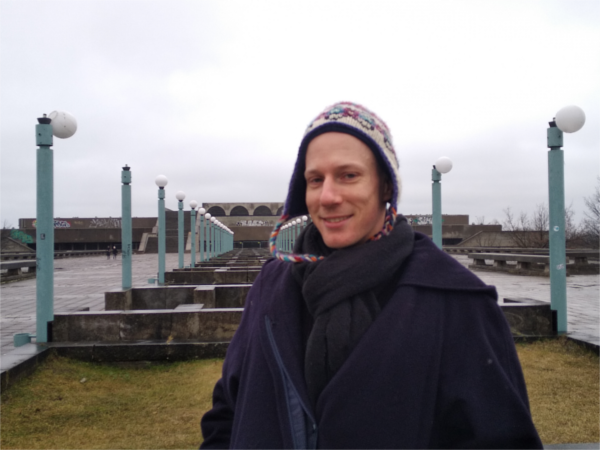

THE SOCIAL CIRCUS MAP 2.0
After working for more than a decade with social circuses, I am still often inspired looking at the social circus map made by Cirque Du Monde. It taught me that social circus exists all over the globe. And I hope that someday I will visit Iglooliks circus in northern Canada - a place I only learned about through the social circus map. Thank you for creating that webpage. It made me dream, and it made me happy.
Over the years the map was not updated as much. I noticed it had links to projects which do not exist anymore, or links to webpages that need to be changed, and even a lot of amazing projects that were missing. I started checking all the links (>400) and created social circus map 2.0. I started programming and I was happy working on supporting this project. I hope it will make people dream, feel connected and inspired.
If your project is not listed or your listed project does not exist anymore please send me an email, I will update the map.
If you need a web programmer or want to buy me a coffee or help me buy my ticket to Igloolik please send me an email. If you have ideas to improve this page send me an email.
It was a lot of work, I totally overesthimated my capacities. And I am very happy to be done.
socialcircusmap@gmail.com

I hope that cirque du monde will host this webpage and it will go where it belongs. This is a test and a chance for everybody to write me an email and have their projects or projects you know about mapped as well.
All the best, Milan.
THE SOCIAL CIRCUS MAP BY CIRQUE DU MONDE
The Social Circus Map uses an online map to plot and index organizations offering social circus workshops. It is the result of efforts made over the last few years by Cirque du Monde— the social circus program of Cirque du Soleil—to compile a record of all organizations dedicated to this form of intervention as well as the various research projects in progress on this topic. Today, Cirque du Monde is pleased to share this with the community at large.
The Social Circus Map does not claim to be exhaustive or definitive. It is intended to evolve in line with the development of the social circus community and the contribution of its players. Furthermore, the Social Circus Map does not seek to certify the quality of organizations’ social circus activities. Rather, it intends to inform the community of the existence of such activities, regardless of practices.
If you know of one or more social circus organizations not included in the Social Circus Map, please contact us at the following address: cirquedumonde@cirquedusoleil.com. Likewise, if you would like to point out any errors or inaccuracies in the information about any organization indexed in the Social Circus Map, contact us at the following address: cirquedumonde@cirquedusoleil.com. Please allow up to 8 weeks before the addition or correction is completed.
IDENTIFICATION CRITERIA
The organizations included in the Social Circus Map have been identified based on the following criteria:
- As part of its activities, the organization offers a social circus program, with the personal and social development of the participants as its primary goal.
- Cirque du Monde has been able to collect sufficient facts regarding the organization’s social circus activities, either via its website or based on information provided by the organization itself.
TERMS OF USE
The geographical information presented on the Social Circus Map is approximate. It is based on the best knowledge of Cirque du Monde and subject to the parameters of the Google Maps online mapping service. Cirque du Monde and Cirque du Soleil may not be held responsible for any errors or inaccuracies contained in the Social Service Map or any damage that may occur through its use.
The Social Circus Map may be used for your personal requirements or for training or research purposes. Any other use of the Social Circus Map must have the prior approval of Cirque du Monde. You may contact us at the following address: cirquedumonde@cirquedusoleil.com.
Cirque du Monde reserves the right to alter the content of the Social Circus Map and its terms of use at any time and at its sole discretion.
LA CARTOGRAPHIE DU CIRQUE SOCIAL DE CIRQUE DU MONDE
La Cartographie du cirque social répertorie, sur une carte du monde en ligne, les organismes offrant des ateliers de cirque social. Elle est le fruit d’efforts déployés au cours des dernières années par Cirque du Monde, le programme de cirque social du Cirque du Soleil, visant à recenser les organismes dédiés à ce mode d’intervention ainsi que les différents projets de recherche en cours sur le sujet. Cirque du Monde est aujourd’hui heureux de la partager à l’ensemble de la communauté.
La Cartographie du cirque social ne prétend pas être exhaustive ou définitive. Elle est appelée à évoluer en fonction du développement de la communauté cirque social et de la contribution de ses acteurs. De plus, la Cartographie du cirque social ne vise pas à certifier la qualité des activités de cirque social au sein des organismes. Elle cherche plutôt à informer la communauté quant à l’existence de ses activités, sans égard aux pratiques.
Si vous connaissez un ou plusieurs organismes de cirque social absents de la Cartographie du cirque social, nous vous invitons à nous joindre à l’adresse suivante, cirquedumonde@cirquedusoleil.com. Par ailleurs, si vous souhaitez nous faire part d’erreur ou d’imprécisions quant aux coordonnées d’un ou de plusieurs des organismes présentés dans la Cartographie cirque social, nous vous invitons également à nous joindre à l’adresse suivante, cirquedumonde@cirquedusoleil.com. Veuillez prévoir un délai de 4 à 8 semaines avant que l’ajout ou la correction soit complétés.
CRITÈRES D’IDENTIFICATION -
Les organismes de cirue social représentés dans la Cartographie du cirque social ont été identifiés à partir des critères suivants :
- L’organisme, dans le cadre de ses activités, offre un volet de cirque social, dont l’intention première est le développement personnel et social des participants.
- Cirque du Monde a été en mesure de recueillir suffisamment d’informations relatives aux activités de cirque social de l’organisme, soit à partir de leurs pages Internet ou encore à partir de renseignements fournis par ce dernier.
CONDITIONS D’UTILISATION
Les coordonnées géographiques présentées dans la Cartographie du cirque social sont approximatives. Elles ont été déterminées au meilleur de la connaissance de Cirque du Monde et en fonction des paramètres offerts par le service de cartographie en ligne Google Maps. Cirque du Monde et Cirque du Soleil ne peuvent être tenus responsables de toutes erreurs ou imprécisions contenues dans la Cartographie du cirque social ou de tout dommage découlant de son utilisation.
Vous pouvez utiliser la Cartographie du cirque social pour vos besoins personnels ou à des fins de formation et de recherche. Toute autre utilisation de la Cartographie du cirque social requiert l'approbation préalable de Cirque du Monde. Vous pouvez nous contacter à l’adresse suivante: cirquedumonde@cirquedusoleil.com.
CARTOGRAFÍA DEL CIRCO SOCIAL DE CIRQUE DU MONDE
La Cartografía del circo social utiliza un mapamundi en línea para organizar y hacer un índice con las organizaciones que ofrecen talleres de circo social. Esto es el resultado de los esfuerzos que ha realizado, durante los últimos años, el Cirque du Monde (programa de circo social del Cirque du Soleil) para compilar un registro con todas las organizaciones que se dedican a este tipo de intervenciones, además de los diferentes proyectos de investigación que se están llevando a cabo sobre este tema. Hoy, Cirque du Monde se complace de compartir este proyecto con el público en general.
No se pretende que la Cartografía del circo social sea exhaustiva o definitiva. Se espera que este evolucione junto con el desarrollo de la comunidad de circo social y según la contribución de sus protagonistas. Además, con la Cartografía del circo social no se pretende certificar la calidad de las actividades de circo social de las organizaciones. Más bien, se pretende informar a la comunidad sobre la existencia de estas actividades, independientemente de sus prácticas.
Si usted sabe de una o más organizaciones de circo social que no estén incluidas en la Cartografía del circo social, comuníquese con nosotros a través de la siguiente dirección: cirquedumonde@cirquedusoleil.com. Igualmente, si desea señalar errores o imprecisiones en la información sobre alguna organización incluida en la Cartografía del circo social, comuníquese con nosotros a través de la siguiente dirección: cirquedumonde@cirquedusoleil.com. Sírvase preveer un plazo de 4 a 8 semanas antes que la adición o la corrección sea completada.
CRITERIOS DE IDENTIFICACIÓN
Las organizaciones incluidas en la Cartografía del circo social se identificaron según los siguientes criterios:
- Como parte de sus actividades, las organizaciones ofrecen un programa de circo social que tiene como objetivo principal el desarrollo personal y social de los participantes.
- Cirque du Monde recabó una cantidad suficiente de información sobre las actividades de circo social de la organización, tanto a través de su sitio web como a través de la información proporcionada por la misma organización.
CONDICIONES DE USO
La información geográfica que se presenta en la Cartografía del circo social es aproximada. Está basada en el mejor conocimiento del Cirque du Monde y está sujeta a los parámetros del servicio de mapas en línea Google Maps. Cirque du Monde y Cirque du Soleil no son responsables de errores o imprecisiones contenidas en la Cartografía del circo social o de cualquier daño que se pueda derivar de su uso.
La Cartografía del circo social sirve para uso personal o para propósitos de investigación. Se requiere la aprobación del Cirque du Monde para cualquier otro uso de la Cartografía del circo social. También se puede comunicar con nosotros a través de la siguiente dirección: cirquedumonde@cirquedusoleil.com
Cirque du Monde se reserva el derecho de modificar el contenido de la Cartografía del circo social y sus términos de uso en cualquier momento y a su entera discreción.
O MAPEAMENTO DO CIRCO SOCIAL DO CIRQUE DU MONDE
O Mapeamento do circo social usa um mapa online para demarcar e indexar organizações que oferecem workshops de circo social. É o resultado de esforços empreendidos nos últimos anos pelo Cirque du Monde—o programa de circo social do Cirque du Soleil—para compilar um registro de todas as organizações dedicadas a essa forma de intervenção, bem como os vários projetos de pesquisa em andamento sobre este assunto. Hoje, o Cirque du Monde tem o prazer de compartilhar essas informações com a comunidade em geral.
O Mapeamento do circo social não tem a pretensão de ser completo ou definitivo. Foi criado para evoluir com o desenvolvimento da comunidade de circo social e com a contribuição de seus participantes. Além disso, o Mapeamento do circo social não tem o objetivo de certificar a qualidade das atividades de circo social das organizações. Seu objetivo, na verdade, é informar a comunidade sobre a existência dessas atividades, independentemente das práticas.
Se você conhecer uma ou mais organizações de circo social que não tenham sido incluídas no Mapeamento do circo social, entre em contato conosco pelo seguinte endereço: cirquedumonde@cirquedusoleil.com. Da mesma forma, se quiser reportar quaisquer erros ou imprecisões nas informações sobre qualquer organização indexada no Mapeamento do circo social, também poderá entrar em contato conosco pelo seguinte endereço: cirquedumonde@cirquedusoleil.com. Por favor, aguarde pelo menos de 4 a 8 semanas antes que a adição ou correção seja concluída.
CRITÉRIOS DE IDENTIFICAÇÃO
As organizações incluídas no Mapeamento do circo social foram identificadas com base nos seguintes critérios:
- Como parte de suas atividades, a organização oferece um programa de circo social que tem como principal objetivo o desenvolvimento pessoal e social dos participantes
- O Cirque du Monde conseguiu coletar fatos suficientes referentes às atividades de circo social da organização, seja por meio de seu website ou com base em informações disponibilizadas pela própria organização.
TERMOS DE USO
As informações geográficas apresentadas no Mapeamento do circo social são aproximadas. Tomam como base o melhor conhecimento do Cirque du Monde e estão sujeitas aos parâmetros do serviço de mapas online do Google Maps. O Cirque du Monde e o Cirque du Soleil não se responsabilizam por quaisquer erros ou imprecisões contidos no Mapeamento do circo social ou por quaisquer danos que seu uso possa causar.
O Mapeamento do circo social pode ser usado para suas necessidades pessoais ou para fins de formação e pesquisa. Qualquer outro uso do Mapeamento do circo social deverá ser previamente aprovado pelo Cirque du Monde. Você pode entrar em contato conosco pelo seguinte endereço: cirquedumonde@cirquedusoleil.com.
O Cirque du Monde se reserva o direito de alterar o conteúdo do Mapeamento do circo social e seus termos de uso a qualquer momento e a sua exclusiva discrição.